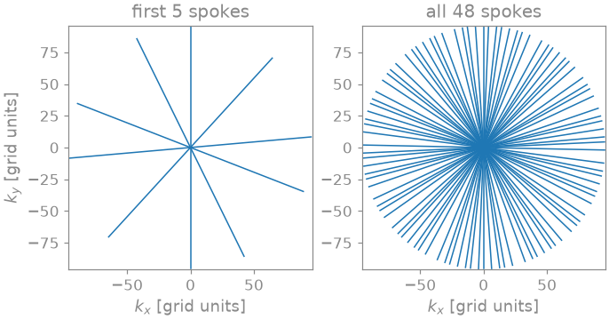
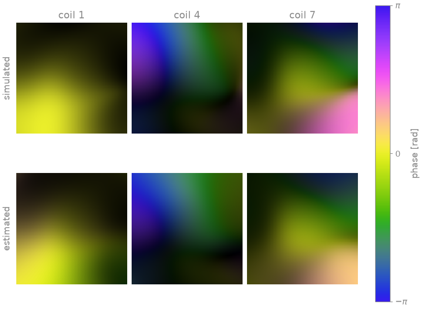
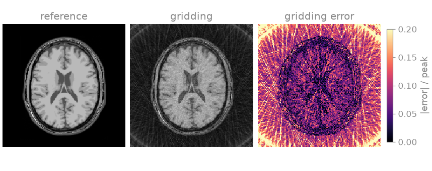
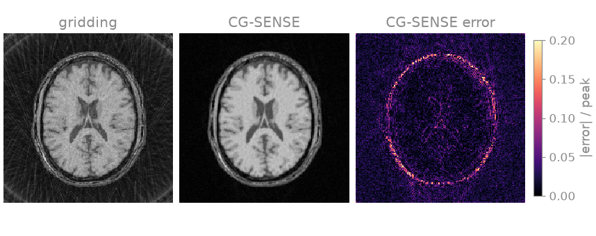
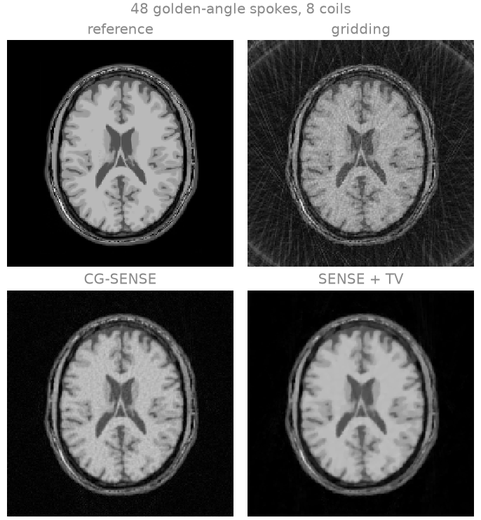
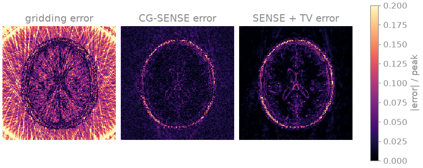
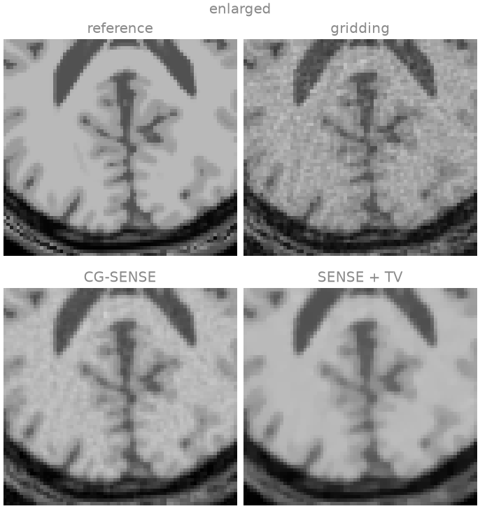
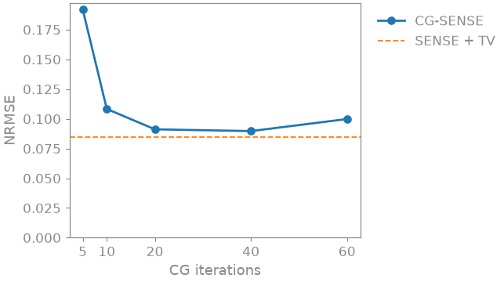

Note
Go to the end to download the full example code.
8. Radial SENSE#
In lesson 7 you computed radial trajectories, the NUFFT, density compensation and the point spread function, and saw that omitting spokes produces streak artefacts. In this lesson you reconstruct an undersampled golden-angle radial scan with eight receive coils: you estimate the coil sensitivities from the radial data, then reconstruct by gridding, by iterative SENSE, and by SENSE with a total-variation penalty.
The forward model is the SENSE model of lesson 2 with the FFT replaced by a NUFFT [1]:
where \(S\) multiplies by the coil sensitivities, the NUFFT samples each coil image along the trajectory, \(W\) is an optional weighting of the samples and \(\varepsilon\) is noise. \(A^H A\) is not diagonal in any basis, so the model is solved iteratively, with one NUFFT and one adjoint NUFFT (or an equivalent convolution) per iteration.
Every spoke passes through the centre of k-space, so the low spatial frequencies remain fully sampled. The angular gaps between spokes alias into streaks distributed over the whole field of view, not into the discrete fold-over of Cartesian undersampling. The coil encoding and the penalty act on this incoherent aliasing.
Learning objectives
Simulate a multichannel radial acquisition with
bartorch.linop.NoncartesianSense.Estimate the sensitivities from the radial data with
bartorch.tools.ncalib().Reconstruct by gridding, by CG-SENSE and by SENSE with total variation, and name the residual artefact of each.
Rebuild the same reconstruction from the operator and
bartorch.optim.ADMM, and compare the two forms of the normal operator.
Previous: 7. Basics of non-Cartesian imaging. Next: 9. Nonlinear inversion for T2 mapping, where you put a signal model inside the forward operator and fit a \(T_2\) map straight from k-space. The Tour Dynamic golden-angle radial MRI adds a time axis to this encoding.
Simulated acquisition#
The object is the BrainWeb brain slice [2] of lesson 2, on a 192 matrix, seen by BART’s analytical eight-channel head coil. You acquire 48 spokes of 192 samples. To sample the edge of k-space at the Nyquist rate a radial scan needs \(\pi/2\) times as many spokes as the matrix has lines, here about 302, so the scan is undersampled by a factor of about 6.3. Successive spokes are rotated by the golden angle, 111.25 degrees, so any contiguous subset of them covers k-space nearly uniformly [3].
bartorch.linop.NoncartesianSense implements the model above: it
maps an image to the samples of every channel along the trajectory. You
simulate the scan by applying it to the object and adding complex Gaussian
noise. The data are generated with the same transform used for the
reconstruction, so the errors below come from the undersampling, the noise
and the estimated sensitivities, not from a model mismatch.
import time
import torch
import bartorch
import bartorch.tools as bt
from bartorch import apps, linop, optim, priors
COILS = 8
SPOKES = 48
sensitivities = bt.coils(t=bt.grid(D=(SIZE, SIZE, 1)), n=COILS)[:, 0]
sensitivities /= bartorch.rss(sensitivities, axes=(0,), keepdim=True)
trajectory = bt.traj(readout=SIZE, spokes=SPOKES, radial=True, golden=True)
E = linop.NoncartesianSense(sensitivities, (SIZE, SIZE), traj=trajectory)
measured = bt.noise(E(image), n=1e-4, s=7)
print(f"{E.ishape} -> {E.oshape}")
print(E.plan)

(192, 192) -> (8, 48, 192)
Plan(transform=nufft, image=sensitivities, normal=kernel, coil_batch=1, streamed=coils, executor=slab)
Each golden-angle increment places the new spoke inside the largest angular gap left by the previous ones, so the angular coverage is nearly uniform after any number of spokes. Near the centre the 48 spokes sample k-space more densely than the Nyquist rate; towards the edge the azimuthal distance between spokes exceeds one grid unit, and this undersampling of the high spatial frequencies produces the streaks.
The data are (coils, spokes, samples) along a trajectory
(spokes, samples, 3) whose kz component is zero, which makes the
transform two-dimensional. bartorch.apps.pics() takes that layout.
BART’s commands, bartorch.tools.ncalib() and
bartorch.nufft_adjoint() among them, carry non-Cartesian k-space as
(coils, spokes, samples, 1), so you hand them measured[..., None].
Coil sensitivities from the spokes#
ESPIRiT, used in lessons 2 and 3, builds its calibration matrix from a
Cartesian block at the k-space centre, so on radial data that block must be
gridded first. bartorch.tools.ncalib() operates on the non-Cartesian
samples directly: it runs the nonlinear inversion of lesson 4 [4] at
low resolution, with the densely sampled centre of the radial scan as the
calibration region.
N=True divides the maps by their root sum of squares, as was done for
the simulated maps above. SENSE recovers the image \(x\) for which
\(Sx\) explains the data, so a root sum of squares that varies across
the field of view appears in the image as its reciprocal, a smooth intensity
shading. ESPIRiT maps are normalized by construction; nonlinear-inversion
maps are not.
maps = bt.ncalib(measured[..., None], t=trajectory, N=True)

Brightness is magnitude, colour is phase. The estimated maps reproduce the magnitude of the simulated ones and their phase pattern across the head. They are smoother, because nonlinear inversion penalizes the high spatial frequencies of the sensitivities, and in places their phase is offset from the simulated one. A phase common to all coils is not identifiable: SENSE cannot separate it from the phase of the image, which absorbs it. Outside the head there is no signal to calibrate from, and the maps there are extrapolated.
Gridding#
The gridding reconstruction is the density-compensated adjoint of lesson 7, applied per channel: weight each sample by its distance from the k-space centre (the ramp filter of filtered back-projection), apply the adjoint NUFFT, and combine the channels by root sum of squares.
weights = torch.linalg.norm(trajectory.real[..., :2], dim=-1, keepdim=True)
weights = weights.clamp(min=0.25).to(torch.complex64)
channels = bartorch.nufft_adjoint(
measured[..., None] * weights,
trajectory,
(SIZE, SIZE),
)
gridded = bartorch.rss(channels[:, 0], axes=(0,))

The anatomy is sharp, since the centre of k-space is fully sampled, but streaks cover the whole field of view, including the region outside the head where the object has no signal. They are the image convolved with the point spread function of lesson 7. Gridding uses no model of the coil encoding, so it cannot separate aliased signal from true signal.
CG-SENSE#
bartorch.apps.pics() with a trajectory and no penalty runs conjugate
gradients on the normal equations \(A^H A x = A^H y\): CG-SENSE
[1].
cg_sense = apps.pics(measured, maps, traj=trajectory, maxiter=30)

The streaks are removed: each coil weights the aliased signal differently, and the coil encoding separates it from the anatomy. The residual is noise amplified across the head, since at sixfold undersampling the inversion is ill-conditioned. The largest errors are on the scalp, a bright, thin edge whose energy lies mostly at high spatial frequencies, where the spokes are farthest apart. Without a penalty, the iteration count is the only regularization: further iterations fit more of the noise. The last section of the lesson varies it.
SENSE with total variation#
A total-variation penalty [5] over the two image axes regularizes
explicitly: noise and streaks have a large total variation, piecewise
constant anatomy a small one. pics solves the penalized problem with
ADMM.
TV_WEIGHT = 0.0005
ITERATIONS = 30
term = priors.TotalVariation(axes=(-1, -2), weight=TV_WEIGHT)
start = time.perf_counter()
reconstruction = apps.pics(
measured,
maps,
traj=trajectory,
regularizers=term,
solver="admm",
maxiter=ITERATIONS,
)
print(f"pics: {time.perf_counter() - start:.2f} s")



pics: 0.63 s
The penalty suppresses the noise as well as the streaks. Its residual error lies along tissue boundaries, and in the enlarged region behind the ventricles the thin cortical folds are flattened: a boundary between two tissues of similar intensity also has a small total variation and is smoothed with the noise. The resolution of all three is limited by the disc of k-space the spokes cover. The NRMSE and SSIM against the reference:
gridding: NRMSE 0.324, SSIM 0.418
CG-SENSE: NRMSE 0.087, SSIM 0.565
SENSE + TV: NRMSE 0.084, SSIM 0.863
CG-SENSE and SENSE with TV have nearly the same NRMSE but different SSIM.
NRMSE sums the squared error over the image: CG-SENSE distributes it as
noise over the head, TV concentrates it at edges. SSIM compares local
means, variances and covariances, and is higher for the TV reconstruction.
scaled=True fits one global factor before comparing, so the metric
compares shapes, not overall scale.
CG-SENSE from an operator and a solver#
The same reconstruction can be assembled from its parts, as in lesson 6:
the encoding operator over the estimated maps, and the ADMM solver with the
same term. pics also divides the data by a scale before solving and
multiplies the image back by it; off the grid it estimates the scale from
the adjoint reconstruction, so bartorch.optim.data_scaling() takes the
operator.
A = linop.NoncartesianSense(maps[:, 0], (SIZE, SIZE), traj=trajectory)
scale = optim.data_scaling(measured[..., None], A=A)
data = measured / scale
start = time.perf_counter()
assembled = optim.ADMM(term, maxiter=ITERATIONS)(data, A) * scale
print(f"operator and solver: {time.perf_counter() - start:.2f} s")
difference = (assembled.squeeze() - reconstruction.squeeze()).abs().max()
relative = float(difference / reconstruction.abs().max())
print(f"relative difference from pics: {relative:.1e}")
operator and solver: 0.61 s
relative difference from pics: 0.0e+00
The two run the same iteration over the same operator. They are not guaranteed to be bit-identical: the NUFFT spreads samples onto the grid over several threads and sums them in the order the threads finish, so two runs can differ at the level of floating-point round-off.
The normal operator#
Every iteration applies \(A^H A\). For one coil that is a convolution
with the point spread function of the trajectory, so it can be computed
exactly by FFTs on a grid of twice the matrix size, the Toeplitz embedding
[6], instead of by a NUFFT followed by an adjoint NUFFT; with coils
it is that convolution between multiplications by the sensitivities. The
operator uses the convolution by default (normal=kernel in the plan
printed above), and toeplitz=False asks for the transform pair.
pair = linop.NoncartesianSense(
maps[:, 0],
(SIZE, SIZE),
traj=trajectory,
toeplitz=False,
)
start = time.perf_counter()
paired = optim.ADMM(term, maxiter=ITERATIONS)(data, pair) * scale
print(f"without the Toeplitz normal: {time.perf_counter() - start:.2f} s")
relative = float((paired - assembled).abs().max() / assembled.abs().max())
print(f"relative difference {relative:.1e}")
without the Toeplitz normal: 0.24 s
relative difference 3.2e-02
The two normal operators differ by the tolerance of the transforms, and the iterations propagate that difference into the images. Their costs scale differently. The convolution is an FFT, a pointwise multiplication and an inverse FFT on the doubled grid per coil, independent of the number of samples. The transform pair is two non-uniform transforms, whose spreading and interpolation cost grows with the number of samples. The convolution therefore gains as the number of samples grows, with more spokes or with the frames of a dynamic series sharing one normal operator. The timings printed above are for this machine and this sample count.
Exercise: early stopping of CG#
Check that the iteration count regularizes CG-SENSE: rerun it with a range of iteration counts and compute the NRMSE of each.

5 iterations: NRMSE 0.192
10 iterations: NRMSE 0.108
20 iterations: NRMSE 0.091
40 iterations: NRMSE 0.090
60 iterations: NRMSE 0.100
The error falls steeply over the first iterations, as CG recovers the
image, reaches its minimum between 20 and 40 iterations, and rises again at
60, as CG fits more of the noise: semi-convergence. The dashed line is the
TV reconstruction. Repeat the experiment with fewer spokes, or a higher
noise level in bt.noise, and see where the minimum moves.
As a spec#
What this lesson built, stated the way you would ask an agent for it:
Reconstruct a 2D golden-angle radial multichannel acquisition (8 coils,
48 spokes of 192 samples, 192x192 matrix) with bartorch. Simulate it with
linop.NoncartesianSense and bt.noise. Estimate normalized sensitivities
with bt.ncalib(kspace[..., None], t=traj, N=True). Reconstruct three ways:
gridding (ramp-weighted bartorch.nufft_adjoint, root sum of squares),
CG-SENSE (apps.pics, 30 iterations) and SENSE with total variation
(priors.TotalVariation over the last two axes, weight 0.0005, ADMM,
30 iterations). Repeat the TV reconstruction with optim.data_scaling and
optim.ADMM over the operator, with and without the Toeplitz normal, and
report the differences. Report NRMSE and SSIM of the magnitudes against
the reference after a global least-squares scale.
References#
Total running time of the script: (0 minutes 5.270 seconds)